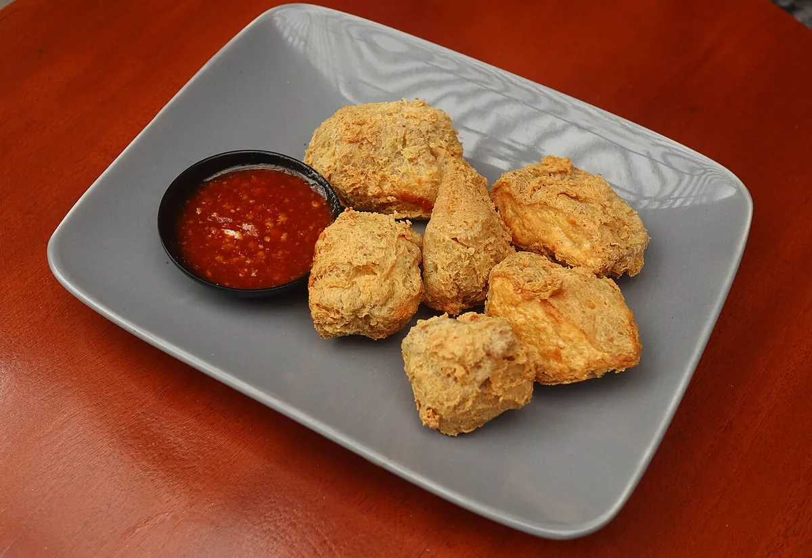
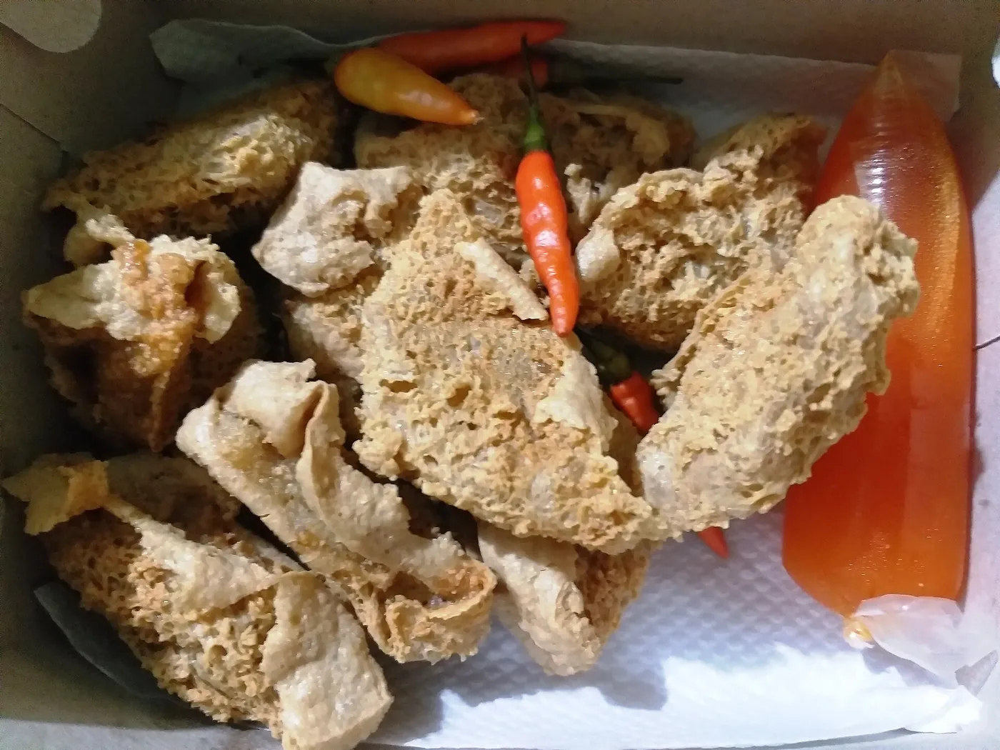
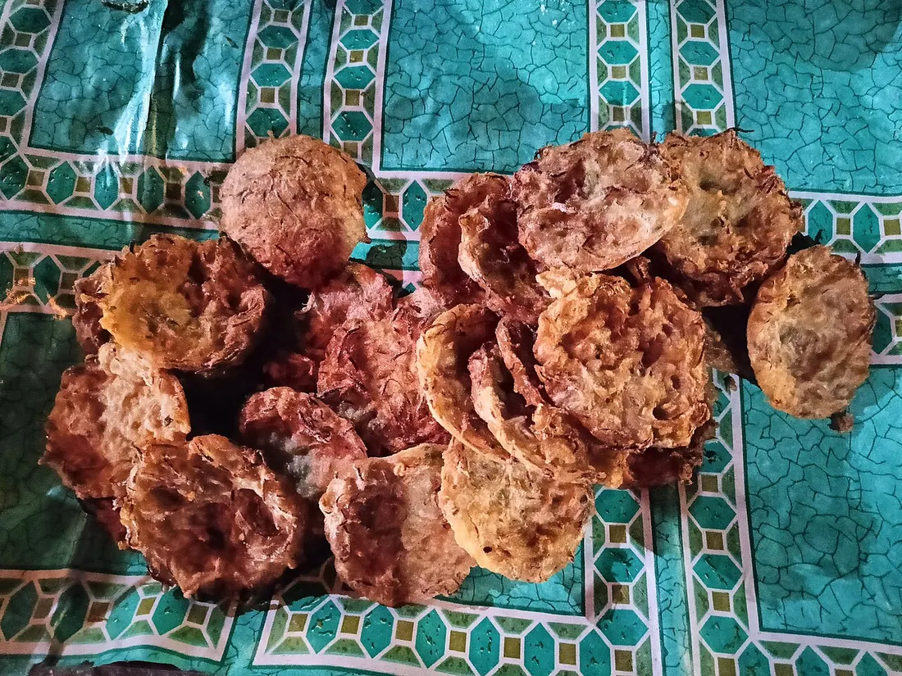
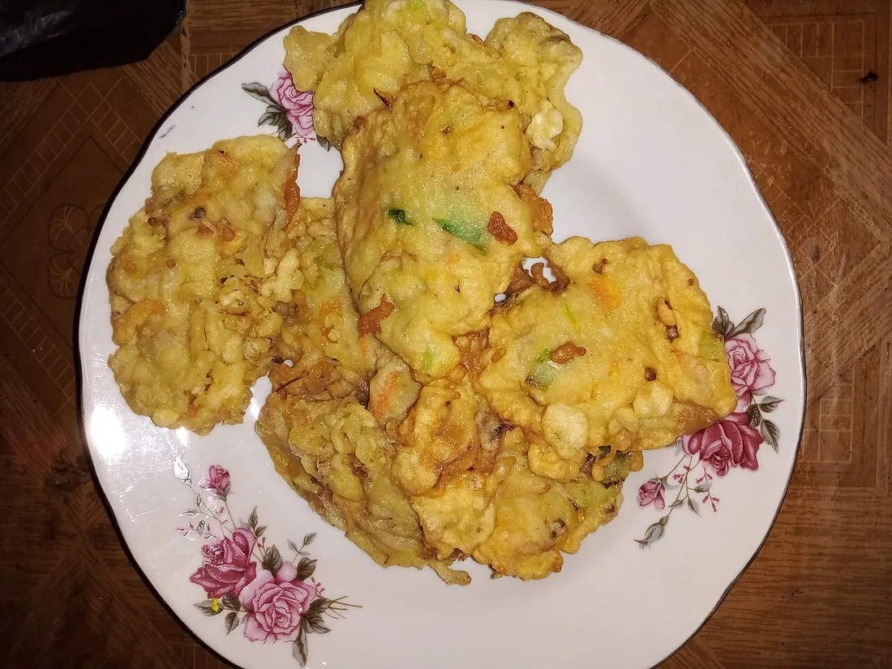

Original
5.000
per bungkus 3 pcs
Isi aci saja. Paling laris.
- Sambalincluded
- 3 pcs per bungkus
- Bisa eceran
Digoreng garing setiap sore, dijual hangat sampai habis. Bungkus mulai 5 ribu.

porsian 10.000Bukan yang dibekukan. Pagi digoreng, habis itu selling.
Dibeli dari pengepul di Panton, bukan tahu murah pengisi.
Sambal galak dan sambal tomat tidak pakai bumbu instan.
Minimal 5 bungkus untuk pesanan yang lebih besar.

Tahu pong dibelah dua, lalu dibalik sampai bagian dalam keluar.baru diisi adonan aci, lalu digoreng sampai kriuk.
Bentuknya setengah bola, renyah di luar, kenyal di dalam. Namanya dari kata walik yang berarti membalik. Jajanan ini asalnya dari Banyuwangi, sekarang sudah banyak dijual di luar Jawa.
Semua sudah termasuk sambal. Harga tidak naik waktu hari raya, tetap sama.
Original
5.000
per bungkus 3 pcs
Isi aci saja. Paling laris.
Ayam isi
7.000
per bungkus 3 pcs
Adonan dicampur ayam giling.
Jumpo isi
8.000
per bungkus 3 pcs
Adonan isi bakso dan dau yangLabs.
Tidak ada mesin. Adonan dicampur tangan, tahu digoreng satu per satu.
Tahu pong dibelah dua, kerok sebagian sisa isinya.
Tepung aci, bawang putih, dan daun bawang dicampur air panas.
Adonan masuk ke tahu sampai penuh, permukaan diratakan.
Minyak panas, api sedang, tiris diWirehook biar tidak lembek.
Beli satu buat nyoba, pulang bawa sepuluh.
WARNA pelanggan biasa


Pesan lewat WhatsApp sebelum pukul 15.00, supaya masih bisadigoreng sore itu juga.
Lokasi
Jalan Cut Nyak Dhien No. 45, Baiturrahman, Banda Aceh
Warung dengan pintu hijau, tepat seberang SMP Negeri 1.
Jam buka
Selesai lebih cepat kalau kurang dari 10 bungkus.
Kontak
Nomor WhatsApp sengaja dikosongkan di contoh ini.
Tulis jumlah bungkus dan jam ambil. Kalau masih ragakan, pesan satu dulu untuk dicoba.